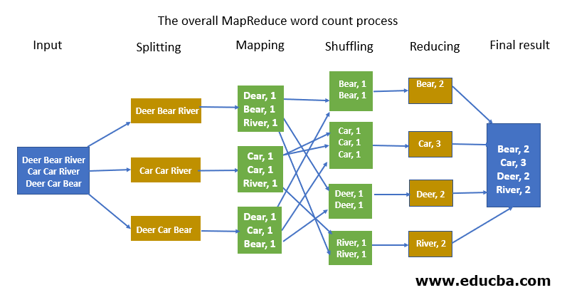

Big Data For Data Science
Module 3: Data processing for Big Data
Xingang (Ian) Fang
Outline
Data processing for Big Data Overview
MapReduce Paradigm
Hadoop Ecosystem
Apache Spark
Overview
Definition
The second stage in the life cycle
Convert raw data from data acquisition and make it ready for data analysis
Either manual or automatic
Many sub-tasks
Data integration, Data cleansing, Data validation, Data enriching, Data validation, etc.
Related topics
Data wangling/munging - manual data processing, usually in exploratory analysis
Data preprocessing - an obscure definition of the combination of several subtasks such as data integration, data cleansing, etc.
MapReduce Paradigm
Allows distributed process of large volume of data
Work on key-value pairs
Advantages - scalability, fault tolerance, flexibility, and cost-effectiveness
Mapper and Reducer
Phases: Mapping, Shuffling and Sorting, Reducing
Implementations:
Hadoop MapReduce
Spark
MapReduce Paradigm - Word Counting
Apache Hadoop Ecosystem
Definition: Hadoop is an open-source software framework for distributed storage and processing of large datasets on clusters of commodity hardware.
Components:
Core: HDFS, MapReduce (Java), YARN
Other: Hive, Pig, Spark, HBase, Mahout, Oozie
Mapper Example
public static class TokenizerMapper
extends Mapper<Object, Text, Text, IntWritable>{
private final static IntWritable one = new IntWritable(1);
private Text word = new Text();
public void map(Object key, Text value, Context context
) throws IOException, InterruptedException {
StringTokenizer itr = new StringTokenizer(value.toString());
while (itr.hasMoreTokens()) {
word.set(itr.nextToken());
context.write(word, one);
}
}
}public static class IntSumReducer
extends Reducer<Text,IntWritable,Text,IntWritable> {
private IntWritable result = new IntWritable();
public void reduce(Text key, Iterable<IntWritable> values,
Context context
) throws IOException, InterruptedException {
int sum = 0;
for (IntWritable val : values) {
sum += val.get();
}
result.set(sum);
context.write(key, result);
}
}Driver Example
public static void main(String[] args) throws Exception {
Configuration conf = new Configuration();
Job job = Job.getInstance(conf, "word count");
job.setJarByClass(WordCount.class);
job.setMapperClass(TokenizerMapper.class);
job.setCombinerClass(IntSumReducer.class);
job.setReducerClass(IntSumReducer.class);
job.setOutputKeyClass(Text.class);
job.setOutputValueClass(IntWritable.class);
FileInputFormat.addInputPath(job, new Path(args[0]));
FileOutputFormat.setOutputPath(job, new Path(args[1]));
System.exit(job.waitForCompletion(true) ? 0 : 1);
}Apache Spark
Apache Spark is an open-source distributed computing system that is designed to process large-scale data and perform real-time analytics.
An all-in-one tool for data processing and data analysis
Installation
Standalone
Under Hadoop
Components:
Core, Spark SQL, Streaming, MLLib, GraphX
API language support
Scala: native
Python: PySpark
R
Java
SQL: through Spark SQL APIs in other languages
Spark Components
Internal Components
Spark Core
Spark SQL
Spark Streaming
MLlib
GraphX
Language support: Scala, Java, Python, R, SQL (through other languages)
External Components
Resource/Cluster Managers: Apache Mesos, Hadoop YARN
Storage Systems: HDFS, DBFS, S3, ADLS
NoSQL Databases: Apache Cassandra, Apache HBase
RDBMS: MySQL, PostgreSQL, Oracle, MS SQL
Comparison
Feature |
Hadoop |
Spark |
|---|---|---|
Processing Paradigm |
Batch processing |
Batch and real-time processing |
In-Memory Computing |
No |
Yes |
Supported Languages |
Java, Python, R, and others |
Java, Scala, Python, R, and others |
Data Processing Speed |
Slower than Spark |
Faster than Hadoop |
Data Processing Model |
MapReduce, HDFS, and YARN |
RDDs, DataFrames, Datasets, and Spark Streaming |
Feature |
Hadoop |
Spark |
|---|---|---|
Cluster Management |
Apache Ambari, Apache Mesos, and Cloudera Manager |
Apache Mesos, Standalone, Hadoop YARN, and Apache Kubernetes |
Fault Tolerance |
Yes |
Yes |
Real-Time Processing |
No |
Yes |
Streaming Capabilities |
Limited |
Full-featured |
Ease of Use |
Complex and requires specialized skills |
Easier to use and has a simpler learning curve |
Data APIs
RDD (Resilient Distributed Datasets)
DataFrame
DataSet
Feature |
RDD |
DataFrame |
DataSet |
|---|---|---|---|
Data type |
Unstructured, semi-structured |
Structured, semi-structured |
Structured |
Performance |
Good |
Better |
Better |
API level |
Low |
High |
High |
Typing |
General object |
General object |
Strict type |
We focus on RDD in this course as it is more relevant to the Big Data processing and other APIs are extensively covered elsewhere.
PySpark Examples
# Import SparkSession
from pyspark.sql import SparkSession
# Create a Spark Session
spark = SparkSession.builder.master("local[*]").getOrCreate()
# Create an RDD from a list of numbers
rdd = spark.sparkContext.parallelize([1, 2, 3, 4, 5])
# Perform a map operation to square each number in the RDD
squared_rdd = rdd.map(lambda x: x**2)
# Filter the squared RDD to keep only even numbers
even_rdd = squared_rdd.filter(lambda x: x % 2 == 0)
# Collect the even numbers as a list
even_list = even_rdd.collect()
# Print the list of even numbers
print(even_list)# Import SparkSession
from pyspark.sql import SparkSession
# Create a Spark Session
spark = SparkSession.builder.master("local[*]").getOrCreate()
# Create a DataFrame from a CSV file
df = spark.read.csv('mydata.csv', header=True, inferSchema=True)
# Select columns and filter rows
filtered_df = df.select('name', 'age').filter(df['age'] > 30)
# Group the DataFrame by name and calculate the average age
grouped_df = filtered_df.groupBy('name').agg({'age': 'avg'})
# Show the results in the console
grouped_df.show()PySpark Examples
# Create a case class for representing a person
from pyspark.sql.types import StructType, StructField, IntegerType, StringType
from pyspark.sql.functions import col
class Person:
def __init__(self, name, age):
self.name = name
self.age = age
# Create a Dataset from a list of Person objects
schema = StructType([
StructField("name", StringType()),
StructField("age", IntegerType())
])
people = [Person("Alice", 25), Person("Bob", 30), Person("Charlie", 35)]
ds = spark.createDataFrame(people, schema).as[Person]
# Filter the Dataset to keep only people older than 30
filtered_ds = ds.filter(col("age") > 30)
# Group the Dataset by name and calculate the average age
grouped_ds = filtered_ds.groupBy("name").avg("age")
# Show the results in the console
grouped_ds.show()